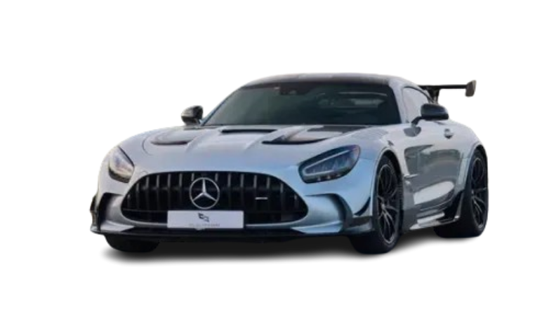
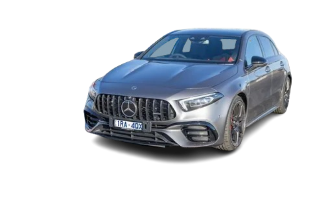
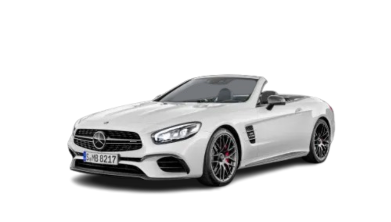
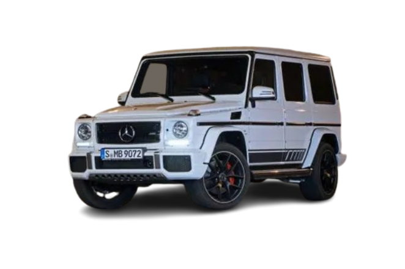
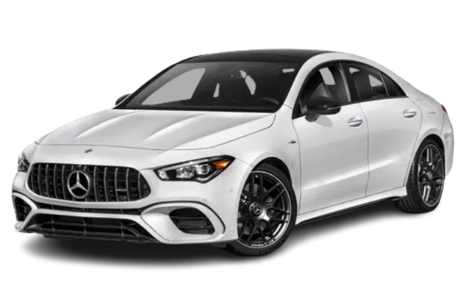

Bienvenido
Esta página muestra distintos modelos deportivos de Mercedes AMG, en donde vas a encontrar información e imágenes de algunos de los autos más conocidos de la marca.

Mercedes AMG GT Black Series
El AMG GT Black Series es uno de los modelos más extremos y rápidos fabricados por Mercedes AMG.

Mercedes AMG C63
El AMG C63 combina lujo y deportividad en un sedán moderno con gran potencia.

Mercedes AMG A45
El AMG A45 es un hatchback compacto deportivo con diseño agresivo y excelente aceleración.

Mercedes AMG SL63
El AMG SL63 es un convertible deportivo que mezcla lujo, comodidad y velocidad.

Mercedes AMG G63
El AMG G63 es una SUV de lujo muy reconocida por su diseño cuadrado y motor potente.

Mercedes AMG E63
El AMG E63 ofrece un equilibrio entre elegancia, deportividad y tecnología moderna.

Mercedes AMG CLA45
El AMG CLA45 tiene un diseño aerodinámico y un estilo deportivo pensado para un público joven.

Mercedes AMG One
El AMG One es un hypercar inspirado en la Fórmula 1 y uno de los modelos más exclusivos de Mercedes.
Sobre Mercedes-AMG
Filosofía "One Man, One Engine"
En la fábrica de Affalterbach, cada motor es ensamblado a mano por un solo técnico. Este proceso garantiza una precisión extrema y un rendimiento que define a la marca. Al finalizar, el técnico coloca una placa con su firma sobre el motor.
Rendimiento y Tecnología
Los modelos AMG no solo destacan por su potencia, sino por su ingeniería avanzada: sistemas de tracción inteligente, suspensiones adaptativas y una aerodinámica inspirada directamente en la Fórmula 1.
Contacto
Email: mercedesamg@gmail.com
Instagram: @mercedesamg
Teléfono: 11-1234-5678